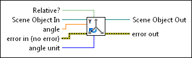
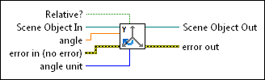

Rotate Y-axis VI
Owning Palette: Transformations VIs
Requires: Full Development System
Rotates an object about the Y-axis.
 Add to the block diagram Add to the block diagram |
 Find on the palette Find on the palette |
Owning Palette: Transformations VIs
Requires: Full Development System
Rotates an object about the Y-axis.
| Add to the block diagram |
Find on the palette |
 |
Relative? specifies whether the rotation is relative to the axis. The default is FALSE. |
 |
Scene Object In specifies a reference to the scene you want to manipulate. |
 |
angle specifies the angle of rotation. The default is 0. |
 |
error in describes error conditions that occur before this node runs. This input provides standard error in functionality. |
 |
angle unit specifies the units of rotation in degrees or radians. The default is degrees. |
 |
Scene Object Out returns a reference to the scene object. |
 |
error out contains error information. This output provides standard error out functionality. |